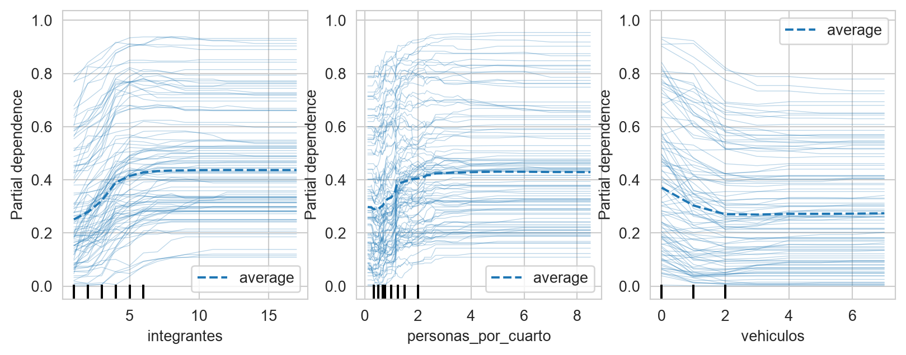

from sklearn.model_selection import train_test_split
from sklearn.ensemble import RandomForestClassifier
from sklearn.inspection import permutation_importance
from sklearn.inspection import PartialDependenceDisplay
from sklearn.metrics import recall_score
from matplotlib import pylab as plt
import numpy as np
import pandas as pd
import seaborn as sns
import shap
URL_DATOS = ('https://github.com/INGEOTEC/AprendizajeComputacional/'
'releases/download/datos-v1')16 Interpretabilidad y Equidad
El objetivo de la unidad es conocer y aplicar técnicas para interpretar las predicciones de un modelo, tanto de manera global como para una observación particular.
Paquetes usados
16.1 Introducción
El capítulo de ensambles (Capítulo 11) terminó con una observación incómoda: un bosque aleatorio predice mejor que un árbol de decisión, pero ya no se puede leer. Un árbol pequeño se entiende siguiendo sus reglas de la raíz a una hoja; un bosque de cientos de árboles, cada uno con miles de nodos, no. Es el dilema de Occam que describe Breiman (2001b): entre los modelos disponibles, los más exactos suelen ser los más difíciles de entender. El mismo autor señala además el efecto Rashomon: con frecuencia hay muchos modelos distintos, que usan las variables de maneras diferentes, con prácticamente el mismo rendimiento. Eso hace frágil cualquier interpretación que se apoye en un solo modelo, porque otro igual de bueno podría contar una historia diferente.
En política pública la pregunta no es académica. Una regla de focalización decide qué hogares reciben un apoyo y cuáles no. Quien la opera debe poder explicar qué variables mueven la decisión, si esas variables son razonables y, ante el reclamo de un hogar concreto, por qué ese hogar quedó dentro o fuera del programa. Un modelo que no se puede explicar es difícil de auditar, de defender y de corregir.
Conviene separar dos preguntas. La pregunta global es qué variables usa el modelo en general y cómo cambia su predicción cuando cambian; se responde con la importancia de variables y con la dependencia parcial. La pregunta local es por qué el modelo hizo una predicción particular; se responde con los valores de Shapley. Una alternativa a explicar un modelo opaco es usar uno interpretable por construcción, como un árbol pequeño (Capítulo 10) o una regresión con pocas variables (Capítulo 3); Rudin (2019) recomienda preferirlos en decisiones de alto impacto cuando rinden parecido al modelo opaco. Una referencia general sobre el tema es Molnar (2022).
La advertencia central del capítulo es que todas estas técnicas explican al modelo, no al mundo. Que una variable sea importante para predecir no significa que modificarla modifique el resultado. Es la misma distinción entre predecir e inferir que se discutió en Sección 1.2 y al interpretar los coeficientes de una regresión en Sección 3.8.
16.2 Modelo de Referencia
Para tener un ejemplo concreto se usa el problema de focalización (Sección B.1.1): predecir si un hogar es pobre por ingresos a partir de sus características, con un bosque aleatorio como el de Capítulo 11. La preparación de los datos cambia respecto a los capítulos anteriores. Ahí cada variable de texto se convertía en variables indicadoras, una columna por categoría; aquí cada variable de texto se sustituye por un código entero, de manera que cada variable original quede en una sola columna y la interpretación se haga por variable y no por categoría. Los árboles solo necesitan poder ordenar los valores de una variable para cortarla, por eso el código entero es suficiente; no sería adecuado para un modelo lineal, que interpretaría el código como una cantidad. La partición es la misma de antes: 20% de los hogares para prueba, estratificada por la clase y con random_state=0.
pobreza = pd.read_csv(f'{URL_DATOS}/enigh_pobreza.csv.gz')
X = pobreza.drop(columns=['pobre_ingresos', 'factor'])
texto = [c for c in X.columns
if not pd.api.types.is_numeric_dtype(X[c])]
for c in texto:
X[c] = X[c].astype('category').cat.codes
X = X.astype(float)
y = pobreza['pobre_ingresos'].to_numpy()
T, G, y_t, y_g = train_test_split(X, y, test_size=0.2,
random_state=0, stratify=y)
bosque = RandomForestClassifier(min_samples_split=9, n_jobs=-1,
random_state=0).fit(T, y_t)
prob = bosque.predict_proba(G)[:, 1]
hy = bosque.predict(G)
recall = recall_score(y_g, hy, average='macro')El conjunto tiene \(89,988\) hogares y \(42\) variables predictoras, de las cuales \(16\) son de texto y se convirtieron en códigos enteros. T y G son DataFrame, así que conservan los nombres de las variables, que se usan en todas las figuras del capítulo. La conversión X.astype(float) deja todas las columnas como números reales, que es lo que esperan algunas de las funciones de las secciones siguientes. El bosque tiene un macro-recall (Sección 2.3.6) de \(0.7360\) en el conjunto de prueba, prácticamente el mismo que se obtiene con variables indicadoras.
Varias de las técnicas del capítulo vuelven a predecir el conjunto de prueba muchas veces con los datos modificados. Para que el costo de cómputo sea razonable, en las secciones siguientes se usa una muestra de 3,000 hogares de prueba.
G_m = G.sample(3000, random_state=0)
y_m = y_g[G.index.get_indexer(G_m.index)]16.3 Importancia de Variables
La primera pregunta global es cuánto pesa cada variable en las predicciones del modelo. Hay dos medidas usuales para un bosque: la que se obtiene de la estructura de los árboles, a partir de la reducción de impureza, y la que se obtiene midiendo cuánto empeora el rendimiento cuando se destruye la información de una variable, la importancia por permutación.
16.3.1 Importancia por Impureza
En un árbol de decisión cada corte reduce la impureza de los nodos, medida con la entropía o con el índice de Gini (Capítulo 10). La importancia de la variable \(j\) en un árbol es la suma de las reducciones de impureza de los nodos donde se cortó con esa variable, ponderada por la fracción de ejemplos que llegan a cada nodo; en un bosque se promedia sobre los \(B\) árboles y se normaliza para que la suma sobre las variables sea \(1\):
\[ I_j \propto \frac{1}{B} \sum_{b=1}^B \sum_{t \in \mathcal T_b(j)} \frac{N_t}{N} \left[ H(t) - \frac{N_{t_\textsf{izq}}}{N_t} H(t_\textsf{izq}) - \frac{N_{t_\textsf{der}}}{N_t} H(t_\textsf{der}) \right], \tag{16.1}\]
donde \(\mathcal T_b(j)\) son los nodos del árbol \(b\) que cortan con la variable \(j\), \(H\) es la impureza, \(N_t\) es el número de ejemplos que llegan al nodo \(t\), y \(t_\textsf{izq}\) y \(t_\textsf{der}\) son sus hijos. scikit-learn la calcula al entrenar y la guarda en el atributo feature_importances_.
imp_impureza = pd.Series(bosque.feature_importances_,
index=X.columns)Esta medida tiene dos limitaciones. La primera es que se calcula con el conjunto de entrenamiento, de manera que no dice nada sobre el rendimiento del modelo fuera de muestra: una variable con la que el bosque se sobreajusta puede aparecer como muy importante. La segunda es que favorece a las variables con muchos valores distintos, porque ofrecen más cortes posibles y alguno de ellos reducirá la impureza aunque sea por azar (Strobl et al. (2007)).
16.3.2 Importancia por Permutación
La importancia por permutación, propuesta por Breiman (2001a), se mide en el conjunto de prueba. Se calcula el rendimiento del modelo, se permutan al azar los valores de una variable, lo que rompe su relación con la clase sin cambiar su distribución, y se vuelve a medir el rendimiento. Si el modelo depende de esa variable, el rendimiento cae; la caída es la importancia. Como la permutación es aleatoria, se repite \(R\) veces y se promedia:
\[ I_j = s - \frac{1}{R}\sum_{r=1}^R s_{j,r}, \tag{16.2}\]
donde \(s\) es el macro-recall original y \(s_{j,r}\) es el macro-recall con la variable \(j\) permutada en la repetición \(r\). El siguiente código hace una repetición a mano con la variable integrantes. base es el macro-recall en la muestra, G_perm es una copia de la muestra con la columna integrantes permutada y caida es la diferencia de rendimientos.
rng = np.random.default_rng(0)
base = recall_score(y_m, bosque.predict(G_m), average='macro')
G_perm = G_m.copy()
G_perm['integrantes'] = rng.permutation(G_m['integrantes'].to_numpy())
caida = base - recall_score(y_m, bosque.predict(G_perm),
average='macro')El macro-recall en la muestra es \(0.7371\) y al permutar integrantes cae \(0.0180\). La función permutation_importance hace lo mismo para todas las variables, con n_repeats repeticiones cada una; el parámetro scoring indica la medida de rendimiento.
perm = permutation_importance(bosque, G_m, y_m, n_repeats=10,
random_state=0,
scoring='recall_macro')
imp_perm = pd.Series(perm.importances_mean, index=X.columns)Código
fig, ax = plt.subplots(1, 2, figsize=(9, 4))
for k, (imp, titulo) in enumerate([(imp_impureza, 'Impureza'),
(imp_perm, 'Permutación')]):
top = imp.sort_values(ascending=False).head(10)
sns.barplot(x=top.to_numpy(), y=top.index, ax=ax[k])
ax[k].set_title(titulo)
fig.tight_layout()
La Figura 16.1 compara las dos medidas. Por reducción de impureza las cinco variables más importantes son personas_por_cuarto, integrantes, menores_12, edad_jefe, entidad; por permutación son menores_12, integrantes, vehiculos, combustible_cocina, personas_por_cuarto. Las listas coinciden en lo esencial, el tamaño y la composición del hogar, pero no en todo. La diferencia más clara es edad_jefe, que ocupa el lugar \(4\) por impureza y el lugar \(40\) por permutación; tiene \(94\) valores distintos y, como se explicó, la impureza premia a ese tipo de variables aunque no ayuden a predecir fuera de muestra. Algo parecido, en menor grado, pasa con entidad, que tiene \(32\) valores distintos y pasa del lugar \(5\) por impureza al \(6\) por permutación.
La importancia por permutación también tiene limitaciones. Cuando dos variables están correlacionadas, como integrantes, menores_12 y personas_por_cuarto, que miden casi lo mismo, al permutar una el modelo compensa con las otras y la importancia de cada una se subestima. Además, permutar una variable crea hogares que no existen, por ejemplo con pocos integrantes y muchos menores de 12 años, y el rendimiento se mide en esos hogares imposibles. Finalmente, \(11\) variables tienen una importancia ligeramente negativa (la menor es \(-0.0026\)): es ruido de la permutación y equivale a una importancia de cero.
16.4 Dependencia Parcial
La importancia dice cuánto pesa una variable, pero no en qué dirección mueve la predicción. La dependencia parcial (Friedman (2001)) responde cómo cambia la predicción promedio cuando la variable \(j\) toma el valor \(v\) y las demás variables se quedan como están:
\[ \textsf{DP}_j(v) = \frac{1}{N}\sum_{i=1}^N f(x_i^{(j \leftarrow v)}), \tag{16.3}\]
donde \(x_i^{(j \leftarrow v)}\) es la observación \(i\) con su variable \(j\) sustituida por \(v\) y \(f\) es la probabilidad de la clase positiva, en este caso que el hogar sea pobre. El siguiente código la calcula a mano para la variable integrantes con valores de \(1\) a \(10\): para cada valor v se asigna v a todos los hogares de la muestra y se promedia la probabilidad predicha.
valores = np.arange(1, 11)
dp = []
for v in valores:
G_v = G_m.copy()
G_v['integrantes'] = float(v)
dp.append(bosque.predict_proba(G_v)[:, 1].mean())
dp = np.array(dp)La probabilidad promedio de pobreza pasa de \(0.2512\) cuando todos los hogares tienen un integrante a \(0.4366\) cuando tienen diez; con seis integrantes ya es \(0.4281\), de manera que la curva se aplana después de ese valor. La clase PartialDependenceDisplay hace el mismo cálculo y lo dibuja. Con kind='both' dibuja además una curva por hogar, la expectativa condicional individual (ICE, por sus siglas en inglés, Goldstein et al. (2015)), que es la predicción de ese hogar cuando se mueve solo la variable \(j\); la dependencia parcial es el promedio de esas curvas. El parámetro subsample=100 limita a 100 el número de curvas individuales que se dibujan.
Código
fig, ax = plt.subplots(1, 3, figsize=(10, 3.5))
_ = PartialDependenceDisplay.from_estimator(
bosque, G_m,
['integrantes', 'personas_por_cuarto', 'vehiculos'],
kind='both', subsample=100, random_state=0, ax=ax)
La Figura 16.2 muestra que, en el modelo, más integrantes y más personas por cuarto suben la probabilidad de pobreza, y tener vehículos la baja. Las curvas individuales no son paralelas: para algunos hogares la probabilidad casi no cambia y para otros cambia mucho. Eso indica que el efecto de una variable depende de los valores de las otras, es decir, que hay interacciones, y el promedio las oculta.
La dependencia parcial tiene dos limitaciones importantes. La primera es que supone que se puede mover una variable dejando fijas las demás; cuando las variables están correlacionadas, eso evalúa al modelo en hogares que no existen, como un hogar de un integrante con cuatro personas por cuarto. La segunda es que describe al modelo y no es un efecto causal: que la probabilidad predicha baje con el número de vehículos no dice que regalar un vehículo saque a un hogar de la pobreza; el vehículo es una señal del ingreso del hogar, no su causa.
16.5 Valores de Shapley
Las técnicas anteriores son globales. Los valores de Shapley dan una explicación local: para un hogar \(x\), reparten entre las \(d\) variables la diferencia entre su predicción \(f(x)\) y la predicción promedio. La idea viene de la teoría de juegos cooperativos (Shapley (1953)), donde un grupo de jugadores obtiene una ganancia en conjunto y hay que repartirla de manera justa. Aquí las variables son los jugadores y la predicción es la ganancia; a cada jugador se le paga su contribución marginal, es decir, cuánto cambia la ganancia cuando entra, promediada sobre todos los órdenes en que los jugadores pueden entrar:
\[ \phi_j(x) = \frac{1}{d!} \sum_{\pi} \left[ v(S_\pi^j \cup \{j\}) - v(S_\pi^j) \right], \tag{16.4}\]
donde la suma recorre las \(d!\) permutaciones \(\pi\) de las variables, \(S_\pi^j\) son las variables que aparecen antes de \(j\) en \(\pi\) y \(v(S)\) es la predicción esperada cuando las variables de \(S\) valen lo que valen en \(x\) y las demás se toman de un hogar de referencia \(z\) elegido de un conjunto de fondo. Los valores de Shapley cumplen la propiedad de eficiencia: suman exactamente la diferencia entre la predicción del hogar y la predicción promedio en el conjunto de fondo,
\[ \sum_{j=1}^d \phi_j(x) = f(x) - \mathbb E[f(z)]. \tag{16.5}\]
Con \(d\) variables hay \(d!\) permutaciones, un número intratable aun para \(d\) pequeña. La solución es aproximar la Ecuación 16.4 por muestreo (Štrumbelj y Kononenko (2014)): por cada hogar de fondo \(z\) se sortea una permutación y se van cambiando, una por una y en ese orden, las variables de \(z\) por las de \(x\), anotando cuánto cambia la predicción en cada paso. El cambio en el paso donde entra la variable \(j\) es una muestra de su contribución marginal.
def shapley(modelo, x, fondo, seed=0):
rng = np.random.default_rng(seed)
d = x.shape[0]
phi = np.zeros(d)
for z in fondo:
orden = rng.permutation(d)
z = z.copy()
filas = np.empty((d + 1, d))
filas[0] = z
for k, j in enumerate(orden):
z[j] = x[j]
filas[k + 1] = z
p = modelo.predict_proba(filas)[:, 1]
phi[orden] += np.diff(p)
return phi / fondo.shape[0]
fondo = T.sample(100, random_state=0).to_numpy()
i = int(np.argmax(prob))
x = G.iloc[i].to_numpy()
phi = pd.Series(shapley(bosque, x, fondo), index=X.columns)
esperado = bosque.predict_proba(fondo)[:, 1].mean()La función shapley recibe el modelo, el hogar x y el conjunto de fondo. Por cada hogar de fondo z sortea un orden de las variables (orden) y construye la matriz filas con los \(d+1\) hogares intermedios: el primer renglón es z y cada renglón siguiente cambia una variable más de z por la de x, de manera que el último renglón es x. Las probabilidades p de esos renglones se predicen de una sola vez y np.diff(p) son las contribuciones marginales de las variables en el orden en que entraron; phi[orden] += las acumula en la posición de cada variable. Al final se promedia sobre los hogares de fondo. El conjunto fondo son 100 hogares de entrenamiento, x es el hogar de prueba con mayor probabilidad predicha de ser pobre y esperado es la predicción promedio en el fondo.
La probabilidad predicha para el hogar es \(0.9976\) y la predicción promedio en el fondo es \(0.2911\). Los valores de Shapley suman \(0.7066\), de manera que el promedio más la suma es \(0.9976\), la predicción del hogar, como pide la Ecuación 16.5. Aquí la igualdad es exacta porque cada permutación recorre el camino completo de z a x, así que la suma de sus contribuciones marginales es \(f(x) - f(z)\).
Código
top = phi.reindex(phi.abs().sort_values(ascending=False).index[:10])
fig, ax = plt.subplots(figsize=(6, 4))
sns.barplot(x=top.to_numpy(), y=top.index, ax=ax)
ax.set_xlabel(r'$\phi_j(x)$')
La Figura 16.3 muestra las diez variables con mayor contribución en valor absoluto. Para leerla conviene ver los valores que tiene el hogar en las variables más relevantes:
G.iloc[i][phi.abs().sort_values(ascending=False).index[:5]]menores_12 4.0
integrantes 9.0
combustible_cocina 4.0
personas_por_cuarto 3.0
estufas 0.0
Name: 20347, dtype: float64Las variables que más empujan la probabilidad de este hogar hacia arriba son menores_12, integrantes, combustible_cocina, personas_por_cuarto. Es decir, el modelo lo considera pobre por el tamaño y la composición del hogar y por sus condiciones de vivienda, lo que coincide con las variables más importantes de la Figura 16.1. Una explicación así es la que se puede dar a quien pregunta por qué un hogar concreto quedó dentro del programa.
16.5.1 La librería shap
La librería shap (Lundberg y Lee (2017)) implementa los valores de Shapley para distintos tipos de modelos. Para árboles y ensambles de árboles tiene un algoritmo exacto, TreeExplainer (Lundberg et al. (2020)), que recorre la estructura de los árboles y no necesita muestrear permutaciones. Con feature_perturbation='interventional' y el mismo conjunto de fondo estima la misma cantidad que la función shapley; model_output='probability' indica que se explica la probabilidad y no otra salida del modelo.
explicador = shap.TreeExplainer(bosque, data=fondo,
model_output='probability',
feature_perturbation='interventional')
phi_shap = pd.Series(explicador(x.reshape(1, -1)).values[0, :, 1],
index=X.columns)El resultado de explicador tiene un valor por hogar, por variable y por clase; el último índice, 1, selecciona la clase «pobre».
| Variable | Muestreo | shap |
|---|---|---|
menores_12 |
\(0.1270\) | \(0.1221\) |
integrantes |
\(0.0936\) | \(0.0979\) |
combustible_cocina |
\(0.0920\) | \(0.0896\) |
personas_por_cuarto |
\(0.0713\) | \(0.0771\) |
vehiculos |
\(0.0314\) | \(0.0351\) |
estufas |
\(0.0350\) | \(0.0321\) |
lavadoras |
\(0.0217\) | \(0.0224\) |
microondas |
\(0.0222\) | \(0.0203\) |
La Tabla 16.1 compara los valores de las ocho variables con mayor contribución según shap. Los dos vectores tienen una correlación de \(0.9966\); la diferencia entre ellos es el error de muestreo de la función shapley, que usa una sola permutación por cada hogar de fondo.
Como TreeExplainer es rápido, se puede explicar a muchos hogares a la vez. El siguiente código calcula los valores de Shapley de 100 hogares de prueba (la opción output: false del chunk oculta la barra de progreso que imprime la librería).
G_s = G.sample(100, random_state=0)
valores_shap = explicador(G_s.to_numpy())Código
explicacion = shap.Explanation(valores_shap.values[:, :, 1],
base_values=valores_shap.base_values[:, 1],
data=G_s.to_numpy(),
feature_names=list(X.columns))
shap.plots.beeswarm(explicacion, max_display=12, show=False)
La Figura 16.4 tiene un renglón por variable, ordenadas por el promedio del valor absoluto de sus contribuciones, y un punto por hogar. La posición horizontal es la contribución de la variable a la probabilidad de ese hogar y el color es el valor que toma la variable en el hogar, de azul (bajo) a rojo (alto). La figura es a la vez local, porque cada punto es la explicación de un hogar, y global, porque el conjunto de puntos muestra cómo usa el modelo cada variable; por ejemplo, si los puntos rojos están a la derecha, valores altos de la variable aumentan la probabilidad de pobreza. El promedio del valor absoluto por variable es otra medida de importancia, que se puede comparar con las de la Figura 16.1.
Los valores de Shapley comparten las limitaciones de las técnicas anteriores. Dependen del conjunto de fondo: con otro conjunto de referencia, la predicción promedio y el reparto cambian. Cuando las variables están correlacionadas, el crédito se reparte entre ellas de una manera que depende del modelo y no de una relación real entre las variables y la pobreza. Y, otra vez, explican al modelo: la contribución de una variable no es el efecto de cambiarla en el mundo.
TipActividad
Repita el análisis del capítulo con el problema de tamizaje de diabetes (Sección B.1.3), que se encuentra en el archivo ensanut_salud.csv.gz del release datos-v1. La variable objetivo es diabetes y hay que quitar la columna factor de las variables predictoras. Entrene un RandomForestClassifier, calcule la importancia por permutación usando el macro-recall en el conjunto de prueba y dibuje la dependencia parcial de las variables edad e imc. Discuta por qué diagnostico_hipertension puede ser una variable importante para predecir la diabetes sin que eso diga nada sobre qué causa la diabetes.
16.6 Resumen
En este capítulo se presentaron técnicas para interpretar un modelo que no se puede leer directamente. La importancia por reducción de impureza resume cuánto usa un bosque cada variable al construir sus árboles; es gratuita, pero se calcula con el conjunto de entrenamiento y favorece a las variables con muchos valores distintos. La importancia por permutación mide cuánto empeora el rendimiento en datos de prueba al destruir la información de una variable. La dependencia parcial y las curvas individuales muestran en qué dirección mueve una variable la predicción y si ese efecto cambia de un caso a otro. Los valores de Shapley reparten la predicción de una observación entre sus variables, se pueden aproximar por muestreo de permutaciones o calcular de manera exacta para árboles, y al juntar muchas observaciones dan también una visión global.
Estas técnicas comparten limitaciones. Todas dependen de los datos con que se calculan, ya sea el conjunto de prueba, la muestra o el conjunto de fondo, y todas tienen dificultades cuando las variables están correlacionadas, porque reparten el crédito entre ellas o evalúan al modelo en observaciones que no existen. Sobre todo, interpretan al modelo y no al mundo: una variable importante para predecir no es necesariamente una causa del resultado, y modificarla no tiene por qué modificarlo. Para preguntas de ese tipo se necesitan las herramientas de la inferencia causal.